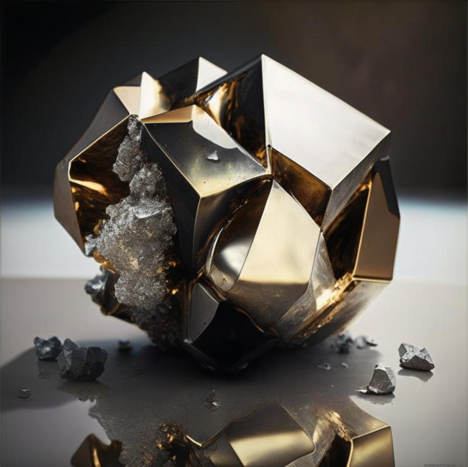

Дармштадтий

Дармшта́дтий (химический символ — Ds, от лат. Darmstadtium) — искусственно синтезированный химический элемент 10-й группы (по устаревшей классификации — побочной подгруппы восьмой группы, VIII B) седьмого периода периодической системы химических элементов Д.И. Менделеева с атомным номером 110.
Впервые изотоп 269Ds получен в 1994 г. в Центре исследования тяжёлых ионов имени Гельмгольца (Дармштадт, Германия) путём бомбардировки 208Pb ускоренными ионами 62Ni; назван по месту открытия.
Дармштадтий - это синтетический элемент, который не существует в природе и может быть создан только в лабораторных условиях.Искусственный дармштадтий может быть получен путем слияния ядер других элементов(свинца и никеля).Дармштадтий пока не имеет практического применения в промышленности, но может использоваться в научных исследованиях.